3D Gaussian Splatting for Learned Drone Navigation
A photorealistic, differentiable simulator for training drones to fly from a single RGB camera.
Daniel Kim1, Yikuan Fang2, Wenshan Wang2, Sebastian Scherer2
1Rice University · 2Carnegie Mellon University, AirLab
Working drafts from the RISS 2026 cycle — numbers and figures are still being revised.
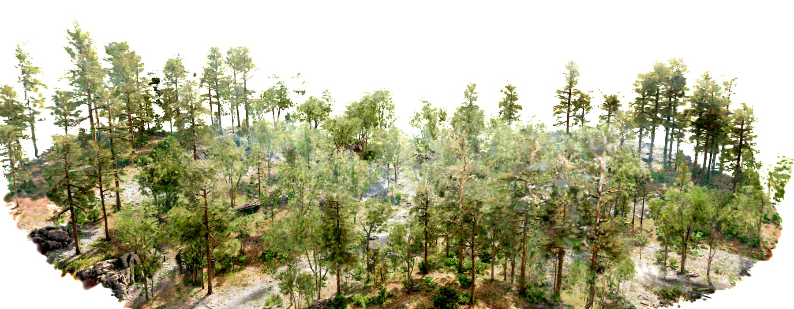
A forest environment reconstructed as 3D Gaussians — one of the simulator's flight scenes.
Overview
Drones that navigate with learned policies almost always rely on depth sensors, because depth is invariant to appearance — but depth sensors add payload, power draw, and cost. A policy that flies from a single RGB camera would be far lighter and cheaper, yet RGB policies are notoriously hard to train because they need visually diverse, photorealistic training environments that classic simulators can't provide.
This project builds that missing environment: a lightweight, GPU-resident simulator that renders photorealistic RGB and metrically accurate depth from 3D Gaussian Splat reconstructions of real and synthetic outdoor scenes — in the same differentiable forward pass. On top of it, a quadrotor dynamics model, collision checking against the reconstructed geometry, and an imitation-learning pipeline train monocular RGB navigation policies across a growing library of diverse scenes.
Novel-view flythroughs
Smooth camera sweeps through reconstructed scenes, far from the original capture trajectory — photorealistic RGB on the left, the simultaneously rendered depth map on the right.
One forward pass: photorealistic RGB + metric depth
The same Gaussians produce the policy's RGB observation and a metrically accurate depth map — so depth supervision, collision penalties, and rendering all live in one autodiff graph. Drag the sliders to compare.
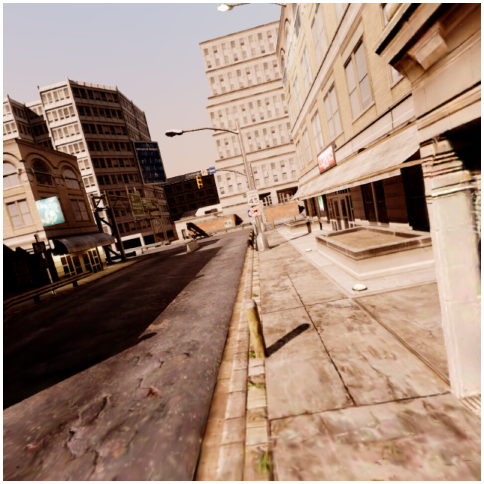
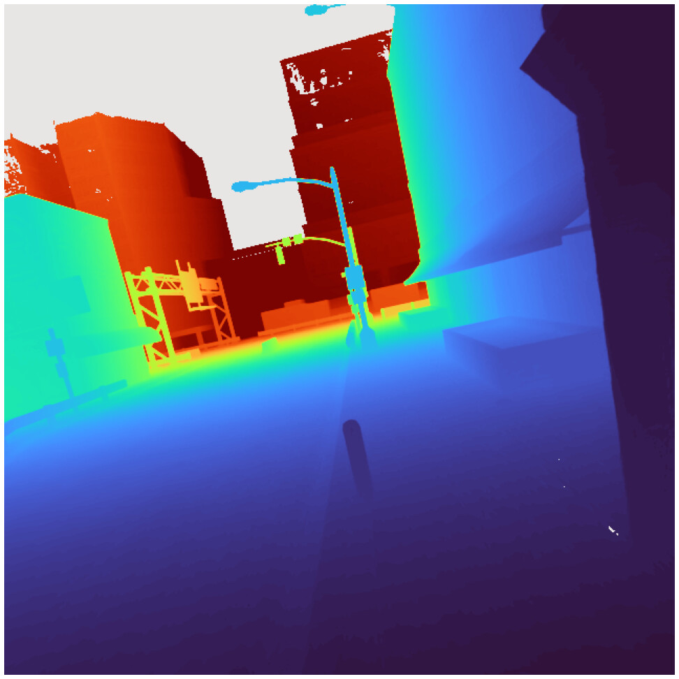
Rendered RGB ↔ rendered depth, same forward pass.
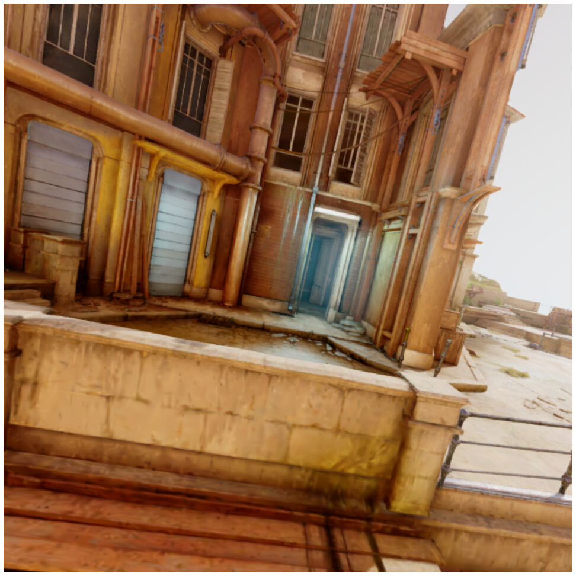
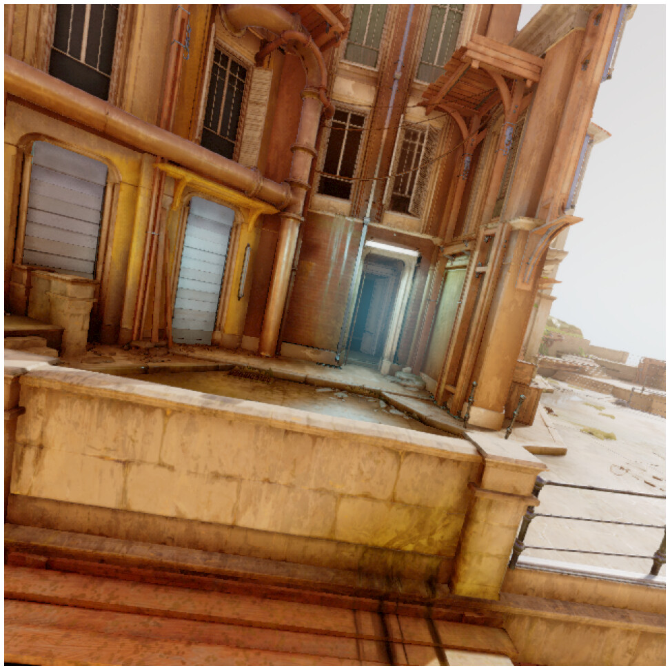
Ground-truth camera image ↔ our reconstruction.
RGB policy vs. depth policy
Two policies flying the same construction-site scenario in the simulator. The DEPTH policy observes depth maps; the RGB policy flies from the color camera alone — the harder problem this project targets. Each video is that policy's own rollout — hover to play.
A growing library of diverse scenes
The main weakness of prior splat-based flight simulators is that they train in one or two environments. This simulator instead draws on a library of reconstructed scenes — urban, natural, industrial, and stylized — so policies see real visual diversity during training. All scenes come from existing public datasets; no new data was captured.
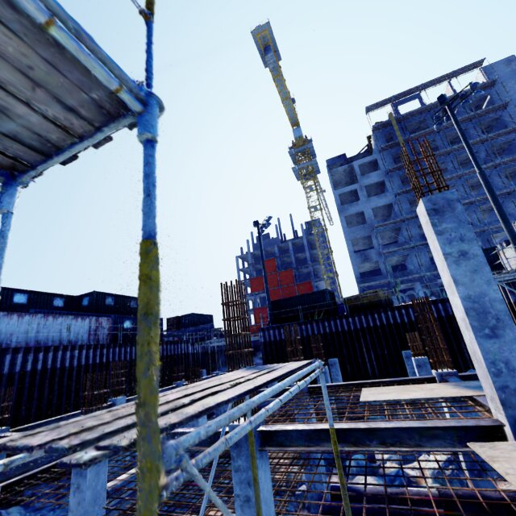
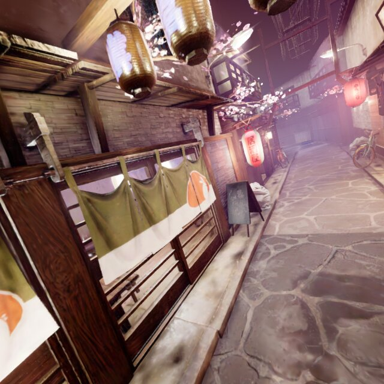
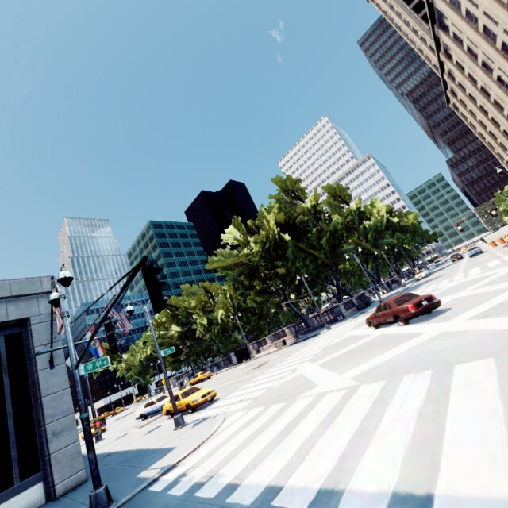
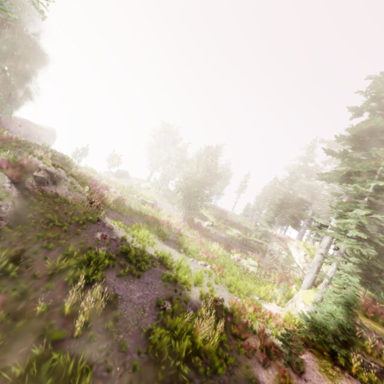
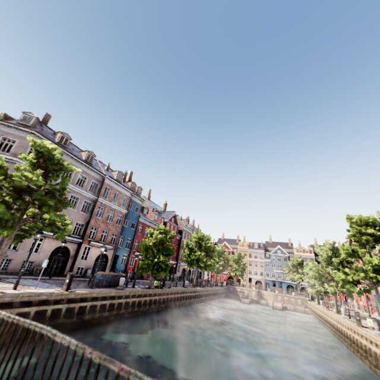
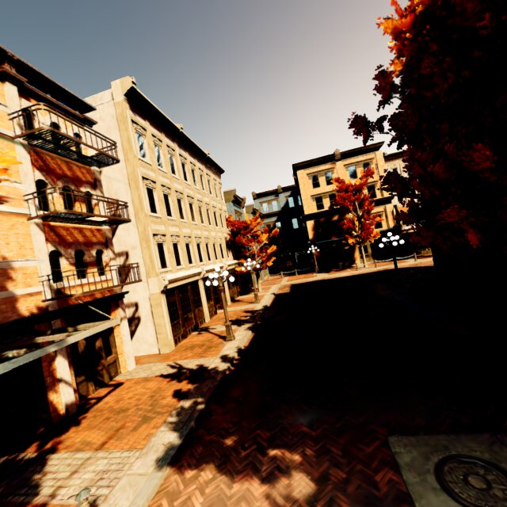
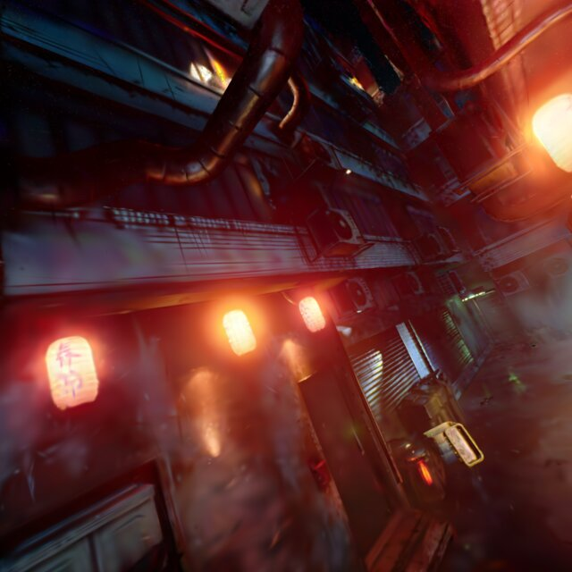
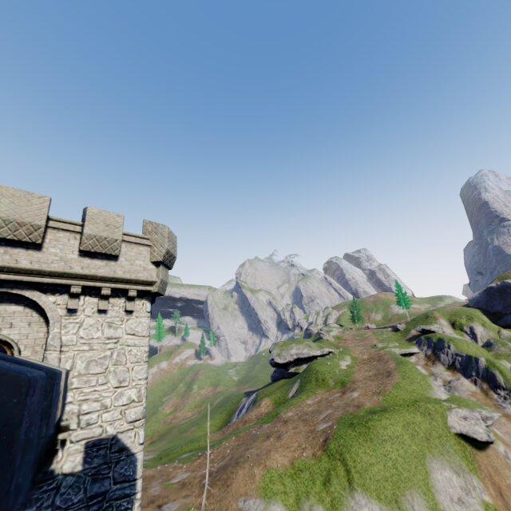
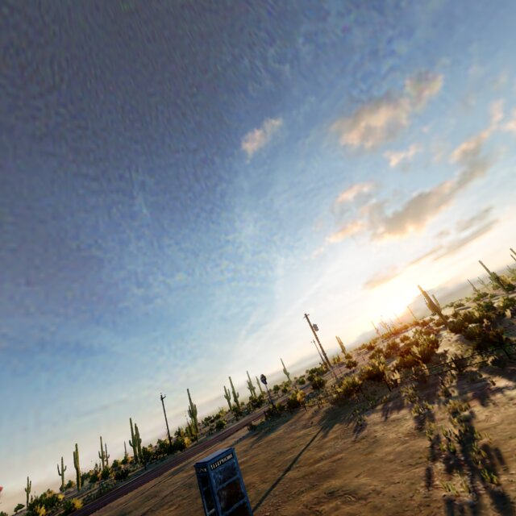
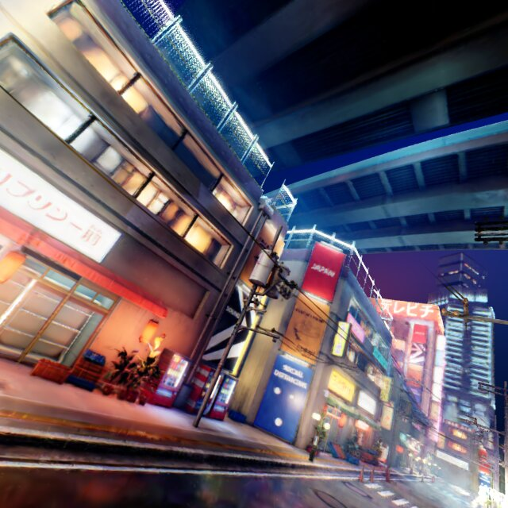
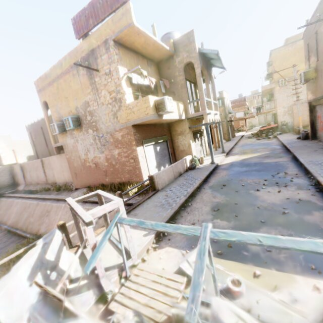
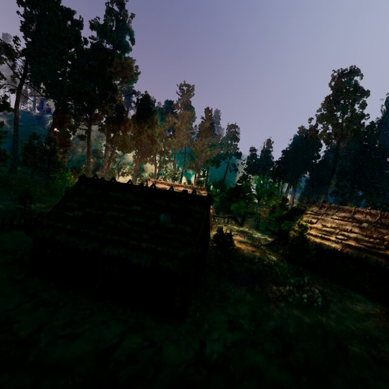
How it works
Every reconstructed scene ships as a complete flight environment: the photorealistic RGB the policy sees, a point cloud and collision field for safety checking, metric depth, and a dense set of expert trajectories to learn from.
🏗️ Scene reconstruction
Outdoor scenes from public datasets (TartanAir and others) are reconstructed as Gaussian splats with depth supervision and free-space regularization, which cut depth error by an order of magnitude and suppress floaters compared to vanilla 3DGS — critical, since the same geometry drives collision checking.
⚡ Differentiable simulation
A single Python process couples a gsplat CUDA rasterizer with a hand-rolled, vectorized PyTorch quadrotor model — no ROS, Unity, or middleware. Dynamics, rendering, and collision signals are differentiable end-to-end, supporting both classic RL and gradient-through-simulation training.
🎓 Imitation learning
A trajectory-optimization expert with access to the full 3D scene plans collision-free paths; a student policy seeing only onboard RGB (or depth) + state learns to reproduce them across many scenes and randomized missions in parallel.
Where the project stands
- Simulator complete: photorealistic rendering, metric depth, collision checking, and batched dynamics run end-to-end at training speeds, across ten reconstructed scenes.
- Reconstruction quality: adding metric-depth supervision costs under half a decibel of PSNR against vanilla 3DGS, and buys an order of magnitude in geometry — depth error falls from ~0.97 m to ~0.09 m, and floating artifacts from 11.5% of pixels to 0.4%.
- Fidelity holds off the capture path: sampling novel views at growing lateral offset, rendering and depth accuracy degrade gradually rather than collapsing — so a policy can fly through the volume, not just along the trajectory the scene was captured on.
- Depth policies work: on a 17-scenario benchmark in Isaac Sim, our depth student clears 10/17 with positive mean clearance — behind the strongest depth baselines from the literature, well ahead of the weakest.
- RGB is the open problem: trained on the identical corpus and recipe, the monocular RGB student clears 5/17, and every scenario it clears is one the depth student also clears. That shape of gap looks like a training corpus that hasn't seen enough visual variation yet — not a modality that can't support navigation.
- Hardware in the loop: a preliminary check flew a depth-based policy on a Starling 2 Max with motion-capture state estimation and a time-of-flight sensor, clearing two obstacles. It validates the hardware integration only — a fully onboard monocular flight is the test this pipeline is built toward.
These numbers come from a draft still under revision; the benchmark spans 17 scenarios and the reconstruction ablation runs on a single held-out scene, so both want to be widened. Next up: a larger and more visually diverse scene library beyond TartanAir, deploying a trained RGB policy on a physical quadrotor, and training regimes beyond imitation learning.
Acknowledgements
This work is being carried out at Carnegie Mellon University's AirLab through the Robotics Institute Summer Scholars (RISS) program. Special thanks to Rachel Burcin and Dr. John Dolan for organizing the program, and to Dr. Sebastian Scherer, Dr. Wenshan Wang, Yikuan Fang, and the AirLab team for their guidance.